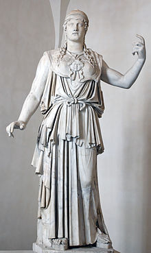

Atenea, también conocida como Palas Atenea es, en la mitología griega, la diosa de la guerra, la civilización, la sabiduría, la estrategia, las artes, la justicia y la habilidad.
Atenea, también conocida como Palas Atenea es, en la mitología griega, la diosa de la guerra, la civilización, la sabiduría, la estrategia, las artes, la justicia y la habilidad.
Es una de las principales deidades del panteón griego y uno de los doce dioses del Olimpo, Atenea recibe culto en toda la antigua Grecia y en toda su zona de influencia, desde las colonias griegas de Asia Menor a la península Ibérica y el norte de África. Su presencia está atestiguada en las proximidades de la India. De ahí su culto tomó muchas formas, y su figura era divinidades sincréticas con varias regiones de todo el Mediterráneo, se extiende la variedad de formas de culto. Su equivalente aproximado en la mitología romana era Minerva.
La versión más actual de su mito la pone como hija de Zeus y Metis, nacida completamente armada de la cabeza a los pies. Nunca se casó ni tuvo amantes, se ha encargado de mantener una virginidad perpetua. Fue una guerrera invicta, incluso contra Ares el dios de la guerra. Se convirtió en patrona de varias ciudades, siendo más conocida como la protectora de Atenas y Ática. También era la protectora de varios héroes y otros personajes míticos, que aparece en muchos de los episodios de la mitología. Fue una de las diosas más representadas en el arte griego y su simbolismo tuvo una profunda influencia en el pensamiento griego, sobre todo en los conceptos de justicia, la sabiduría y la función civilizadora de la cultura y las artes, cuyos reflejos se perciben aún hoy en todo Occidente. Su imagen ha sufrido varias transformaciones en los siglos, la incorporación de nuevas características, nuevos contextos y que influyen en la interacción con otras figuras simbólicas, fue utilizada por varios regímenes políticos para legitimar sus principios, incluso ha penetrado en la cultura popular, su identidad de género ha sido fascinante atractivo especial para los escritores relacionados con el feminismo y la psicología y, por último, algunas corrientes religiosas contemporáneas han empezado a darle de nuevo una verdadera adoración.